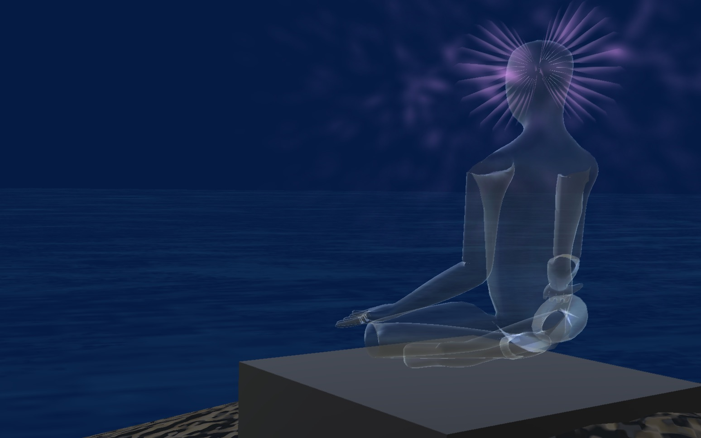

Biofield VR
By Lewey Geselowitz based on his Energy Work Experiences .

Chi and Chakra Visualization
For those curious to see what the "chi" looks like around your hands, or how the auras circulate into the vortices known as chakras, this visually guided mediation was created. It even works on VR headsets so that you can see the swirling energies in front of you.
Down and to the your right you will find a virtual book, turning the pages will switch between mediation excersizes.
To your left you will see a second character, as you look (point your head/eyes) to different parts of the chakras of the body the energy will be activated there. To your far left you will find an abcus that can be used as a timer.

Biofield VR Project on Github
For more on the development of the project.